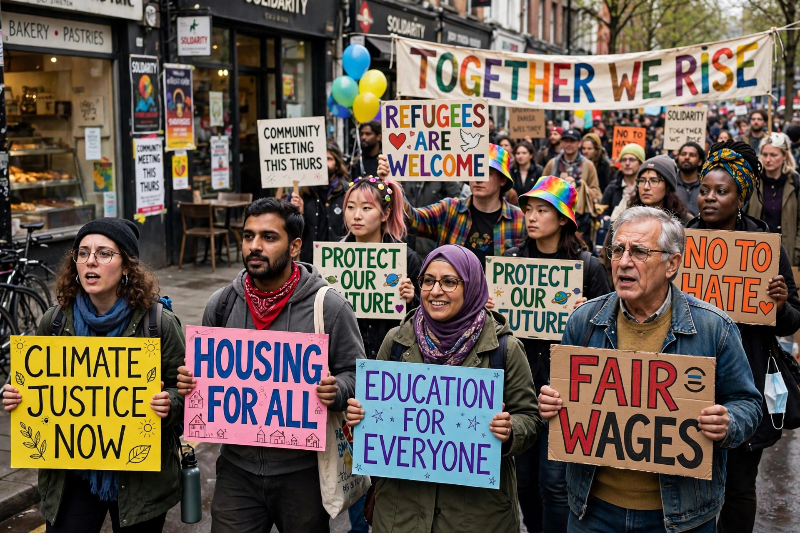

New social movements (NSMs) are a type of collective action that emerged from the mid-1960s onwards, especially in Western Europe and North America. Unlike earlier labour movements centred on material interests and class conflict, new social movements are typically associated with post-material concerns such as identity, lifestyle, human rights, environmental protection and peace.

Theorists such as Alain Touraine, Alberto Melucci and Jürgen Habermas argued that these movements arose in post-industrial societies where cultural conflicts had become central. Participants were often drawn from the new middle class, students and marginalised groups rather than the industrial working class alone.
Typical features include loose, decentralised networks, an emphasis on autonomy and self-determination, suspicion of traditional political parties, and the use of unconventional, often symbolic or media-oriented protest. Movements frequently seek changes in values and everyday life as much as changes in state policy.
The civil rights movement, second-wave feminism, the gay liberation movement, the environmental movement, anti-nuclear and peace movements, and later movements for indigenous rights and disability rights are commonly cited. In Latin America and elsewhere the term has also been applied to movements around urban services, land and democratic participation.
Critics question how "new" these movements really are, noting that 19th-century movements also raised cultural and identity issues, and that many NSMs do pursue material goals. Others argue the theory reflects a mainly European experience and fits less well in the Global South, where movements often combine material and cultural demands.